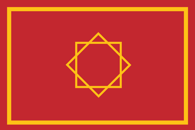
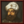

{kind=link}
{kind=link}
{kind=link}
{kind=link}
| 北非 |
| 东非 | 努比亚 |
| 中非 |
| 东南非 |
| 西非 |
| 西南非 |
 | |
|---|---|
| 摩洛哥 | |
| 政府等级 | 王国 |
| 主流文化 | |
| 首都 | |
| 政体 |  巴巴里伊克塔 |
| 国教 | |
| 学派 | 马立克派 |
| 科技组 | 穆斯林科技组 |
| 摩洛哥的理念 |
此信息可能已落后版本，最后更新于1.35 ----
|
| +25% 海军上限 −25% 海军损耗 |
| +1 敌军损耗
|
|
|
摩洛哥（英文：Morocco）是一个位于马格里布的国家，它尊崇的是  逊尼派的马利克学派；开局时，摩洛哥有三个附庸国：
逊尼派的马利克学派；开局时，摩洛哥有三个附庸国： 苏斯、
苏斯、 马拉喀什和
马拉喀什和  塔菲拉勒特。
塔菲拉勒特。
|
|
仅当DLC我们的海、黄金世纪或北方雄狮开启时可用。 |
劫掠海岸是一项海军能力，允许拥有该能力的国家的舰队劫掠其他非同信仰国家的海岸以获得  战利品（金币）和
战利品（金币）和  水手。这项能力可经由国家理念、政府改革等方式获得。部分国家除了不同信仰国家之外，还允许劫掠同信仰国家的海岸。
水手。这项能力可经由国家理念、政府改革等方式获得。部分国家除了不同信仰国家之外，还允许劫掠同信仰国家的海岸。
劫掠海岸可以提供显著的收入和水手池加成，并作为损害其他国家经济的一种手段。
摩洛哥事件描述了横跨撒哈拉的远征和瓦塔斯王朝的政治阴谋。
|
|
这条信息可能已不适合当前版本，最后更新于1.35。 |
作为得土安的统治者和土耳其海盗阿尔及尔的红胡子的盟友，赛义德·胡拉是所有在西地中海行驶的船队的威胁。她的全名是得土安的哈基姆，赛义德·胡拉·宾特·阿里·伊本·拉希德·阿拉米，其中赛义德·胡拉意为「自由而独立的贵妇人，不向任何强权低头的女性君主」，得土安的哈基姆则大致意为得土安的统治者。她丈夫在世时，她经常帮助他处理商业事务。在她的丈夫去世之后，她成为了得土安的统治者。为了向迫使她在年幼时逃离家乡格拉纳达的基督徒敌人报仇，她开始了海盗的生涯。除了为她提供相当数量的赃物与赎金，这项工作也使得她重回安达卢西亚的梦想不至于破灭。
触发条件
|
平均发生时间
200 月 |
立即生效
| |
在宫廷中为她提供一个顾问的职位
将我们的舰队的指挥交给她，让她成为海军司令 | |
摩洛哥作为马格里布文化组的国家，可以成立  安达卢西亚。
安达卢西亚。
|
|
这条信息可能已不适合当前版本，最后更新于1.35。 |
曾几何时，伊比利亚全境为光荣的安达卢西亚穆斯林所统治。让我们洗刷基督徒「再征服」的耻辱，光复我们祖先的土地。
潜在需求
|
接受
|
效果
| |
AI决议权重：
摩洛哥是一个可重建国家；主流文化为摩洛哥或柏柏尔的国家可以在拥有特定核心省份时重建摩洛哥。[1]
|
|
这条信息可能已不适合当前版本，最后更新于1.35。 |
分裂之前，摩洛哥无论是在宗教、经济还是军事，都被看做是马格里布的一方霸主。一旦我们控制王国内的所有领主，我们就能踵武先王遗烈，以马拉喀什为都统治西马格里布！
| 潜在需求 | 接受 |
效果
| |
AI决议因子：
开局时， 摩洛哥拥有三个附庸国：
摩洛哥拥有三个附庸国： 苏斯、
苏斯、 马拉喀什和
马拉喀什和  塔菲拉勒特。有趣的是，这三个附庸国分别是神权制、君主制和部落政体。三个附庸国的独立倾向在开局时都接近50%，但经过一些简单的外交行动，就足以让所有附庸国继续安心接受你的统治。这三个国家的所有领土在开局时就都已经是摩洛哥的核心，因此都可以不花费外交点数瞬间吞并。因此，可以轻易地在开局10年之后同时瞬间吞并这三个国家，从而腾出大量的外交关系位置。直接控制附庸国的土地并发展数座重要的城市还能让你完成任务“帝都”，从而获得一个设立新都城并继续加以发展的机会。
塔菲拉勒特。有趣的是，这三个附庸国分别是神权制、君主制和部落政体。三个附庸国的独立倾向在开局时都接近50%，但经过一些简单的外交行动，就足以让所有附庸国继续安心接受你的统治。这三个国家的所有领土在开局时就都已经是摩洛哥的核心，因此都可以不花费外交点数瞬间吞并。因此，可以轻易地在开局10年之后同时瞬间吞并这三个国家，从而腾出大量的外交关系位置。直接控制附庸国的土地并发展数座重要的城市还能让你完成任务“帝都”，从而获得一个设立新都城并继续加以发展的机会。
作为一个位于北非的强大国家，摩洛哥面临的最大的宿敌就是伊比利亚半岛上的  葡萄牙、
葡萄牙、 卡斯蒂利亚和
卡斯蒂利亚和  阿拉贡。
阿拉贡。 葡萄牙正占据着
葡萄牙正占据着 卡斯蒂利亚也在积极完成再征服运动，而且几乎总会与葡萄牙结盟，击败它们便成了一项困难的任务。
卡斯蒂利亚也在积极完成再征服运动，而且几乎总会与葡萄牙结盟，击败它们便成了一项困难的任务。 阿拉贡可能和
阿拉贡可能和  卡斯蒂利亚结成盟友，也可能相互觊觎剑拔弩张，但伊比利亚联婚很可能使这两个强大的天主教国家联合，更加难以对付。
卡斯蒂利亚结成盟友，也可能相互觊觎剑拔弩张，但伊比利亚联婚很可能使这两个强大的天主教国家联合，更加难以对付。
对付葡萄牙/西班牙的选项包括：
摩洛哥是北非的主要势力，而确保在这一带的绝对优势，显然是之后任何雄心壮志的根基。
对于摩洛哥来说，一个显然的早期行动是向东扩张并征服  特莱姆森。它们足够强大到作为宿敌，但是事实上又足够虚弱，能被轻易地征服或附庸，这也意味着玩家应该轻易地获得一些力量投射。议和时记得羞辱它以完成时代目标，超过50力量投射还会给你带来三个点数各加一点的巨大优势。值得注意的是，有时阶层议会也会给你一个征服邻国特雷姆森的选项，从而让玩家直接获得对特雷姆森数个省份的宣称。
特莱姆森。它们足够强大到作为宿敌，但是事实上又足够虚弱，能被轻易地征服或附庸，这也意味着玩家应该轻易地获得一些力量投射。议和时记得羞辱它以完成时代目标，超过50力量投射还会给你带来三个点数各加一点的巨大优势。值得注意的是，有时阶层议会也会给你一个征服邻国特雷姆森的选项，从而让玩家直接获得对特雷姆森数个省份的宣称。
 突尼斯显然是北非的另一个强大国家。在前期，可以选择与突尼斯结盟，这可以让你相当容易地击败特莱姆森。但精明的玩家显然不会愿意让突尼斯在特莱姆森身上攫取太多的利益，那么与突尼斯的联盟自然不必维持得多么长久，而且不久后你的任务树就会将你引向对突尼斯富庶领地的征服。突尼斯拥有许多具备贸易价值的省份，征服它们可以带来相当大的好处，还能让摩洛哥独自垄断劫掠海岸的收益。在玩家断绝与突尼斯的盟约后，他们常常能寻找到更加强大的盟友，比如
突尼斯显然是北非的另一个强大国家。在前期，可以选择与突尼斯结盟，这可以让你相当容易地击败特莱姆森。但精明的玩家显然不会愿意让突尼斯在特莱姆森身上攫取太多的利益，那么与突尼斯的联盟自然不必维持得多么长久，而且不久后你的任务树就会将你引向对突尼斯富庶领地的征服。突尼斯拥有许多具备贸易价值的省份，征服它们可以带来相当大的好处，还能让摩洛哥独自垄断劫掠海岸的收益。在玩家断绝与突尼斯的盟约后，他们常常能寻找到更加强大的盟友，比如  马穆鲁克或
马穆鲁克或  奥斯曼。但通常来说，不论是这两个强权中的哪个，往往都常常陷入其他方面的战争中，从而无法很好地保护
奥斯曼。但通常来说，不论是这两个强权中的哪个，往往都常常陷入其他方面的战争中，从而无法很好地保护  突尼斯。这时便可以放开手向他们发动战争了。
突尼斯。这时便可以放开手向他们发动战争了。
当开启 黄金世纪 时，摩洛哥拥有一套相当不错的任务树。任务树中除了向伊比利亚、马格里布的扩张之外，还提供了一条相当诱人的向西非发展的路途。完成任务“帝都”和“撒哈拉商路”后，摩洛哥南方的未殖民省份 廷巴克图的永久宣称。
廷巴克图的永久宣称。
西非地区的国家，有的信奉与摩洛哥相同的  逊尼派，有的则信奉
逊尼派，有的则信奉  拜物教；大多数国家彼此结盟，相互攻杀，但他们的军事科技均落后于你，可以被玩家轻易击败。
拜物教；大多数国家彼此结盟，相互攻杀，但他们的军事科技均落后于你，可以被玩家轻易击败。
在对廷巴克图的第一战中，它可能在西非有数个盟友，但此时其盟友的领土均不在你的可见范围内。在战争期间，是可以命令军队向未知省份移动并探明这个省份的，但军队移动的时间会很长，甚至有可能直接遭遇敌方部队。任命机动能力高的陆军将领可以加快军队探明未知省份的速度。
完全征服廷巴克图后，还有一系列任务，将由远及近地给予整个西非地区的永久宣称，经由这些任务，摩洛哥可以成为名副其实的非洲霸主。征服西非不仅能直接获得不小的人力、税收收益，还能从完成任务的奖励中获得更多好处，以及日后更大的贸易收入。
西非地区相当广大，且有许多异教异文化省份，想要全部征服并有效治理，可能需要耗费不小的精力和付出。此外，玩家初期的行政容量非常有限，而行政点数也是十分宝贵的资源。一种方法是由几个附庸国瓜分之。鉴于任务的完成条件往往允许一些省份由摩洛哥的附属国代为控制，因此可以考虑扶植一些附庸国。
 桑海、
桑海、 阿伊尔等国家都拥有不错的国家理念，尤其是拥有不错的战力，且在地理位置上与马格里布比较接近，可以及早扶植。在后续对西非的经略中，可以将一些永久宣称直接交给你的附庸国，并在夺取这些省份后交给他们管理，以让他们的实力更加充实。而一些产出
阿伊尔等国家都拥有不错的国家理念，尤其是拥有不错的战力，且在地理位置上与马格里布比较接近，可以及早扶植。在后续对西非的经略中，可以将一些永久宣称直接交给你的附庸国，并在夺取这些省份后交给他们管理，以让他们的实力更加充实。而一些产出  金矿或者其它重要商品的省份，以及日后适合开办
金矿或者其它重要商品的省份，以及日后适合开办  贸易公司的省份，则可以自己留下。
贸易公司的省份，则可以自己留下。
对于你的附庸国，可能早期需要你帮助他们偿还贷款、进行传教、分享知识，但经过一段时间后，你就可以完全将整个西非收入囊中，并拥有一个实力可观、足够忠诚的附庸国为你提供军事上的协助。可以选择让他们向你转让全部贸易竞争力，并给予他们一定的战争资助。你的伊克塔政体还能让你在每 15 年选择税收政策时从强大的附庸国身上获得更大的好处，因此可以选择长期维持在西非的强大附庸。
如果不希望走附庸国路线，则需要尽早通过攻占  格拉纳达脱非入欧，以此将广大的撒哈拉黑非洲纳为贸易公司。这样的话需要注意早期不要造黑非洲的二级核，防止白白浪费行政点数。
格拉纳达脱非入欧，以此将广大的撒哈拉黑非洲纳为贸易公司。这样的话需要注意早期不要造黑非洲的二级核，防止白白浪费行政点数。
此外，由于地区较为广大，容易出现敌军通过廷巴克图走廊直接突进摩洛哥本土的情况。在征服廷巴克图后，其首都要塞作为必要的封锁，应予以保留。
经略西非之后，摩洛哥的实力应该大为增长，在面对伊比利亚半岛上真正的宿敌时也会轻松许多。
摩洛哥的国家传统允许其 劫掠其他国家的海岸从而获得一定的收益。劫掠富裕的欧洲地中海港口是一个很好的资金来源，但会造成巨大的负面  关系修正。摩洛哥将无法从这些国家中寻找盟友，除非它选择在一段时间内停止对这些国家的劫掠。因此需要在欧洲大陆结交盟友时，最好还是让你的舰队稍微收手。与南欧国家的较差关系也意味着思潮的扩散会比较慢 （在没有友好省份的情况下）。暂时停止对一个国家的劫掠会有些帮助。
关系修正。摩洛哥将无法从这些国家中寻找盟友，除非它选择在一段时间内停止对这些国家的劫掠。因此需要在欧洲大陆结交盟友时，最好还是让你的舰队稍微收手。与南欧国家的较差关系也意味着思潮的扩散会比较慢 （在没有友好省份的情况下）。暂时停止对一个国家的劫掠会有些帮助。
摩洛哥可能触发一些事件，让它有机会获得
得土安或
塞拉这样的海盗共和国作为卫戍国。庇护一个海盗共和国也是完成任务“海盗的安息所”的前提之一。
摩洛哥起始时的领地（包括附庸所拥有的），甚至包括日后征服的伊比利亚半岛上的省份，几乎都算不上特别利于种田发展；这些省份都有地形带来的发展度提升惩罚，但一些地区拥有不错的商品，甚至是金矿。
摩洛哥早期距离欧洲大陆较远，比较难于接受文艺复兴、印刷机应用的思潮（但殖民主义往往不必太劳心），可能不得不选择自己种出其中的一些，但要种田时又要面临地形不利这一问题。
摩洛哥早期完成“帝都”任务给予了一个在
摩洛哥本土、西非地区、伊比利亚半岛乃至新大陆的殖民地都有产出  金矿的省份，这可以给摩洛哥的经济提供不小的支持，但也往往让它面临比较严重的通货膨胀的问题。这时经济理念组显现出了更大的优势——不仅可以帮助你更有效地提升金矿产出，还能较好地抑制通货膨胀的增长。
金矿的省份，这可以给摩洛哥的经济提供不小的支持，但也往往让它面临比较严重的通货膨胀的问题。这时经济理念组显现出了更大的优势——不仅可以帮助你更有效地提升金矿产出，还能较好地抑制通货膨胀的增长。
在攻上伊比利亚之后，必须选择宗教或人文理念中的一个来维持这一地区的稳定——如果玩家决心成立  安达卢西亚，人文理念可能是更好的选择，因为安达卢西亚理念自带的
安达卢西亚，人文理念可能是更好的选择，因为安达卢西亚理念自带的  异教容忍和
异教容忍和  理念花费减少都能让人文理念更充分地发挥作用（摩洛哥也拥有理念花费减少的国家理念），此外，安达卢西亚国家理念自带的月度虔诚值减少以及特殊的修会机制往往都可以让国家大大倾向神秘主义，从而又能享受神秘主义带来的传教力量加成（摩洛哥也拥有月度虔诚值减少的国家理念）。
理念花费减少都能让人文理念更充分地发挥作用（摩洛哥也拥有理念花费减少的国家理念），此外，安达卢西亚国家理念自带的月度虔诚值减少以及特殊的修会机制往往都可以让国家大大倾向神秘主义，从而又能享受神秘主义带来的传教力量加成（摩洛哥也拥有月度虔诚值减少的国家理念）。
摩洛哥有机会在地理大发现时代就开启黄金时代——许多时代目标都可以比较容易地完成，早开启黄金时代可以让摩洛哥及早确立对其他国家的优势，并在之后的游戏中继续扩大。
在游戏前期，摩洛哥可能会在理念组的点数减免上获得不小的优势。接纳摩尔人等历史事件，摩洛哥减少理念花费的国家理念，以及可能的黄金时代都会大大减少摩洛哥的点数花费，从而把宝贵的点数用在其他需要的地方。
作为一个伊斯兰教逊尼派国家，在神秘主义与律法主义做出选择并倾向其中之一可以获得一些不错的加成。摩洛哥自带的月度虔诚值减少的国家理念会让维持高神秘主义值更加容易。
摩洛哥作为一个马格里布文化国家，可以成立  安达卢西亚。重建安达卢西亚可以获得更强大的国家理念以及一个更加庞大、更加有利可图的任务树，并把你的首都迁移到欧洲，给予你更好的贸易节点，获得思潮传播奖励，并能在西非、南非开设
安达卢西亚。重建安达卢西亚可以获得更强大的国家理念以及一个更加庞大、更加有利可图的任务树，并把你的首都迁移到欧洲，给予你更好的贸易节点，获得思潮传播奖励，并能在西非、南非开设  贸易公司。
贸易公司。
在实力壮大后，进攻北方半岛上的宿敌显然是必由之路，你的任务树也给予了你向安达卢西亚地区发展的宣称，但早期对伊比利亚的“反再征服”不仅会面临羽翼渐丰的  葡萄牙、
葡萄牙、 卡斯蒂利亚和
卡斯蒂利亚和  阿拉贡的挑战，他们的军队实力不能小觑。
阿拉贡的挑战，他们的军队实力不能小觑。
一般来说，葡萄牙的实力一般都会是其中最弱的，因此往往会成为第一个突破口。卡斯蒂利亚和阿拉贡的情况则有很多种可能。两国可能彼此视为宿敌，并兵戎相向，对摩洛哥来说，这显然是最好的时机，适时地选择对其中一方开战，就可以轻易获得在伊比利亚的落脚点，并继续图谋“反再征服”。而玩家最不愿意看到的，可能就是两国通过伊比利亚联婚结为一体的情况。这时，往往可以寻求  法兰西的帮助，与其共同对卡斯蒂利亚开战，就会简单许多。
法兰西的帮助，与其共同对卡斯蒂利亚开战，就会简单许多。
征服伊比利亚的省份后，还会遭受异教、异文化的惩罚，可能会带来不少的叛乱，需要妥善地处理。必要时，可以选择授予齐米阶层一些有用的特权。征服所有需要的省份后，就可以重建  安达卢西亚了；考虑到摩洛哥任务中有一些内容是安达卢西亚任务所没有的，可以完成这些任务（如西非分支、北欧分支）后再成立安达卢西亚。
安达卢西亚了；考虑到摩洛哥任务中有一些内容是安达卢西亚任务所没有的，可以完成这些任务（如西非分支、北欧分支）后再成立安达卢西亚。
早期，作为一个异教国家可能很难与欧洲大陆上的国家结盟，但如果将伊比利亚诸国设为宿敌，就很可能有与  英格兰、
英格兰、 法兰西、
法兰西、 普罗旺斯等达成盟约的机会。最好与
普罗旺斯等达成盟约的机会。最好与  教宗国维持一定的关系，不要关系过差，否则可能被当前的教廷监护设为十字军的目标。
教宗国维持一定的关系，不要关系过差，否则可能被当前的教廷监护设为十字军的目标。
随着你实力的增强，强大的  奥斯曼和
奥斯曼和  马穆鲁克可能会主动向你抛来橄榄枝，而如果你有充足的野心，就应该审慎处理，因为成立
马穆鲁克可能会主动向你抛来橄榄枝，而如果你有充足的野心，就应该审慎处理，因为成立  安达卢西亚之后你将获得对中东地区的大量永久宣称，这意味着不得不与这两个大国进入深度的对抗和角逐，不论他们两个在竞争中占优并能主导中东区域的是哪一个。可以选择先与其中一个结盟，并在合适的时机做出重要的军事行动。
安达卢西亚之后你将获得对中东地区的大量永久宣称，这意味着不得不与这两个大国进入深度的对抗和角逐，不论他们两个在竞争中占优并能主导中东区域的是哪一个。可以选择先与其中一个结盟，并在合适的时机做出重要的军事行动。
随着你对伊比利亚半岛大举的“反再征服”，严重的  侵略扩张可能让你在西欧、中欧更加难以寻找结盟的对象，但此时与你的力量相比，大多数国家都已不必纳入过多的考虑，只要尽力防止包围网的形成即可。此外，很多国家可能都已改信了
侵略扩张可能让你在西欧、中欧更加难以寻找结盟的对象，但此时与你的力量相比，大多数国家都已不必纳入过多的考虑，只要尽力防止包围网的形成即可。此外，很多国家可能都已改信了  新教或
新教或  改革宗，而你扩张的方向大体上主要是
改革宗，而你扩张的方向大体上主要是  天主教和
天主教和  逊尼派国家，因而作为世界上的主要强国，外交上灵活操作的空间应该比想象中多。
逊尼派国家，因而作为世界上的主要强国，外交上灵活操作的空间应该比想象中多。
随着你成为顶级列强，以及利益范围的不断扩大，与  法兰西或
法兰西或  奥斯曼等的盟约很可能难以为继，甚至反目成仇，这时可以选择与更遥远但利益趋同的强国结盟以制衡之，例如
奥斯曼等的盟约很可能难以为继，甚至反目成仇，这时可以选择与更遥远但利益趋同的强国结盟以制衡之，例如  帖木儿、
帖木儿、 奥地利、
奥地利、 波斯、
波斯、 俄罗斯、
俄罗斯、 波兰立陶宛联邦等。
波兰立陶宛联邦等。
摩洛哥开局时所处的北非地区与南美大陆相当接近，因此很容易就可以到达新世界。任务树中也给予了摩洛哥一些向新大陆殖民的任务。在殖民的通常好处之外，摩洛哥还可以借此找到新的落脚点以劫掠更多的海岸。战略上，与那些富庶的海岸相距3个海区以内的省份会成为很好的劫掠基地（例如迈阿密、百慕大和印度洋的许多小岛）。
就殖民贸易本身而言，摩洛哥开局时的贸易节点很不合适，因为尽管距离新大陆并不遥远，但来自新大陆的贸易并不能被导入萨菲贸易节点。但是，如果摩洛哥能重建  安达卢西亚、把首都和贸易本埠迁到欧洲，就能充分享受来自新大陆的利益。征服塞维利亚或里斯本等重要贸易省份后，更能使国家从贸易中获益颇丰。成立安达卢西亚后，也会获得更多的殖民相关任务。你的伊克塔政体还能让你在每 15 年选择税收政策时从强大的殖民领身上获得更大的好处。
安达卢西亚、把首都和贸易本埠迁到欧洲，就能充分享受来自新大陆的利益。征服塞维利亚或里斯本等重要贸易省份后，更能使国家从贸易中获益颇丰。成立安达卢西亚后，也会获得更多的殖民相关任务。你的伊克塔政体还能让你在每 15 年选择税收政策时从强大的殖民领身上获得更大的好处。


| 北非 |
| 东非 | 努比亚 |
| 中非 |
| 东南非 |
| 西非 |
| 西南非 |
| 近东 |
| 波斯及中亚 |
| 北亚 |
| 东亚 |
| 东南亚 |
| 印度 |
| 伊比利亚 |
| 法兰西 |
| 低地 |
| 不列颠 |
| 北欧及波罗的 |
| 中欧 |
| 北德意志 |
| 南德意志 |
| 意大利 |
| 巴尔干及安纳托利亚 |
| 东欧 |
| 中美洲 |
| 墨西哥 |
| 北美东北 |
| 北美东南 |
| 北美中西部 |
| 部落联盟国家 | 易洛魁 休伦 克里克 伊利尼维克 肖尼 |
| 前殖民领国家 | 加拿大 |
| 海盗共和国 |
| 南美北部 |
| 安第斯山区 |
| 南美东部 |
| 南美南部 |
| 前殖民领国家 |
| 澳大利亚 |
| 南太平洋 |
| 北太平洋 |
| 前殖民领国家 |